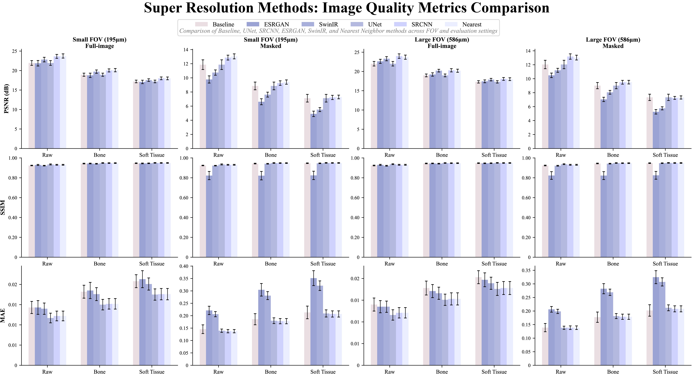

LumbarSR: A Paired Clinical CT and Photon-Counting Micro-CT Dataset for Human Lumbar Vertebrae
| Method | Status | Result Slot |
|---|---|---|
| ESRGAN | Image metrics + morphometry released | Filled on 2026-04-06 |
| SwinIR | Image metrics + morphometry released | Filled on 2026-04-06 |
We report registration quality within the released BoneMask ROI using Dice, HD95, and HD. These metrics are provided as a practical reference for the final registration quality.
| Method | ROI | Dice ↑ | HD95 ↓ | HD ↓ |
|---|---|---|---|---|
| ANTs rigid baseline (195X_195Y_500Z_B) | BoneMask ROI | 0.9826 ± 0.0017 | 0.2266 ± 0.0131 mm | 1.1476 ± 0.5960 mm |
| ANTs rigid baseline (586X_586Y_500Z_B) | BoneMask ROI | 0.9811 ± 0.0023 | 0.2887 ± 0.0358 mm | 0.9095 ± 0.2725 mm |
| ANTs rigid baseline (overall) | BoneMask ROI | 0.9818 ± 0.0021 | 0.2576 ± 0.0411 mm | 1.0285 ± 0.4785 mm |
The public benchmark pages now report the currently released subset (`Micro-PCCT`, registered clinical CT baseline, `SRCNN`, `UNet`, `ESRGAN`, and `SwinIR`) for ROI-based bone morphometry.
| Method / Data | BV/TV | Tb.Th (mm) | Tb.Sp (mm) | Tb.N (mm^-1) |
|---|---|---|---|---|
| Micro-PCCT reference | 0.2208 ± 0.0174 | 0.2573 ± 0.0141 | 0.3647 ± 0.0192 | 0.8608 ± 0.0881 |
| Registered clinical CT baseline | 0.0055 ± 0.0029 | 0.5837 ± 0.1179 | 4.1319 ± 1.1314 | 0.0097 ± 0.0056 |
| Δ / p-value vs Micro-PCCT | -0.2125 / 0.03125 | +0.3761 / 0.03125 | +3.8776 / 0.03125 | -0.8398 / 0.03125 |
| Nearest | 0.0055 ± 0.0029 | 0.5837 ± 0.1179 | 4.1319 ± 1.1314 | 0.0097 ± 0.0056 |
| Δ / p-value vs Micro-PCCT | -0.2125 / 0.03125 | +0.3761 / 0.03125 | +3.8776 / 0.03125 | -0.8398 / 0.03125 |
| SRCNN | 0.0605 ± 0.0212 | 0.7673 ± 0.0865 | 0.9809 ± 0.2448 | 0.0773 ± 0.0202 |
| Δ / p-value vs Micro-PCCT | -0.1556 / 0.03125 | +0.5861 / 0.03125 | +0.5512 / 0.03125 | -0.7762 / 0.03125 |
| UNet | 0.0931 ± 0.0235 | 0.4324 ± 0.0550 | 0.4565 ± 0.0574 | 0.2133 ± 0.0346 |
| Δ / p-value vs Micro-PCCT | -0.1217 / 0.03125 | +0.1907 / 0.03125 | +0.0951 / 0.03125 | -0.6357 / 0.03125 |
| ESRGAN | 0.1330 ± 0.0239 | 0.2740 ± 0.0112 | 0.3941 ± 0.0249 | 0.4841 ± 0.0773 |
| Δ / p-value vs Micro-PCCT | -0.0878 / 0.03125 | +0.0167 / 0.03125 | +0.0293 / 0.09375 | -0.3767 / 0.03125 |
| SwinIR | 0.0415 ± 0.0140 | 0.7371 ± 0.0845 | 1.3594 ± 0.3529 | 0.0549 ± 0.0127 |
| Δ / p-value vs Micro-PCCT | -0.1793 / 0.03125 | +0.4798 / 0.03125 | +0.9947 / 0.03125 | -0.8059 / 0.03125 |
| Method / Data | BV/TV | Tb.Th (mm) | Tb.Sp (mm) | Tb.N (mm^-1) |
|---|---|---|---|---|
| Micro-PCCT reference | 0.2208 ± 0.0174 | 0.2573 ± 0.0141 | 0.3647 ± 0.0192 | 0.8608 ± 0.0881 |
| Registered clinical CT baseline | 0.0026 ± 0.0018 | 0.5338 ± 0.1322 | 5.0502 ± 1.8719 | 0.0053 ± 0.0044 |
| Δ / p-value vs Micro-PCCT | -0.2167 / 0.03125 | +0.2665 / 0.03125 | +5.0664 / 0.03125 | -0.8493 / 0.03125 |
| Nearest | 0.0026 ± 0.0018 | 0.5338 ± 0.1322 | 5.0502 ± 1.8719 | 0.0053 ± 0.0044 |
| Δ / p-value vs Micro-PCCT | -0.2167 / 0.03125 | +0.2665 / 0.03125 | +5.0664 / 0.03125 | -0.8493 / 0.03125 |
| SRCNN | 0.1271 ± 0.0204 | 0.6565 ± 0.0739 | 0.4540 ± 0.0425 | 0.1928 ± 0.0104 |
| Δ / p-value vs Micro-PCCT | -0.0864 / 0.03125 | +0.4665 / 0.03125 | +0.0593 / 0.09375 | -0.6719 / 0.03125 |
| UNet | 0.1227 ± 0.0254 | 0.4639 ± 0.0467 | 0.4421 ± 0.0459 | 0.2624 ± 0.0300 |
| Δ / p-value vs Micro-PCCT | -0.0920 / 0.03125 | +0.2314 / 0.03125 | +0.0863 / 0.03125 | -0.5960 / 0.03125 |
| ESRGAN | 0.1506 ± 0.0209 | 0.2730 ± 0.0089 | 0.3710 ± 0.0160 | 0.5511 ± 0.0702 |
| Δ / p-value vs Micro-PCCT | -0.0702 / 0.03125 | +0.0156 / 0.03125 | +0.0063 / 0.40625 | -0.3097 / 0.03125 |
| SwinIR | 0.0486 ± 0.0144 | 0.4010 ± 0.0203 | 0.9216 ± 0.2053 | 0.1198 ± 0.0305 |
| Δ / p-value vs Micro-PCCT | -0.1722 / 0.03125 | +0.1437 / 0.03125 | +0.5568 / 0.03125 | -0.7410 / 0.03125 |
The released BoneMask defines a consistent VOI for all public morphometry statistics; the public tables report BV/TV, Tb.Th, Tb.Sp, and Tb.N.

Summary figure of registration, image-quality, and trabecular morphometry comparisons across the released baselines. Open the PDF version for the full-resolution figure.
| Method | Full | Masked | ||||
|---|---|---|---|---|---|---|
| Raw | Bone | Soft | Raw | Bone | Soft | |
| Baseline | 21.9449±0.6015 | 18.9359±0.4007 | 17.2012±0.3435 | 11.8627±0.6846 | 8.8535±0.5437 | 7.1188±0.5422 |
| UNet | 21.9449±0.6015 | 18.9359±0.4007 | 17.2012±0.3435 | 11.8627±0.6846 | 8.8535±0.5437 | 7.1188±0.5422 |
| SRCNN | 23.6444±0.5034 | 20.0389±0.3909 | 18.0030±0.3534 | 12.8653±0.3459 | 9.2598±0.3202 | 7.2238±0.3015 |
| ESRGAN | 21.8739±0.7088 | 18.7800±0.5592 | 17.0813±0.4445 | 9.7697±0.5064 | 6.6177±0.4223 | 4.9046±0.3837 |
| SwinIR | 22.8177±0.5885 | 19.7247±0.4243 | 17.5512±0.3366 | 10.7463±0.3728 | 7.6232±0.3476 | 5.5052±0.2795 |
| Nearest | 23.7416±0.5417 | 20.1053±0.4186 | 17.9961±0.3569 | 13.0394±0.3528 | 9.4029±0.3031 | 7.2937±0.2600 |
| Method | Full | Masked | ||||
|---|---|---|---|---|---|---|
| Raw | Bone | Soft | Raw | Bone | Soft | |
| Baseline | 22.0106±0.5928 | 18.9804±0.3657 | 17.3008±0.3026 | 12.0416±0.6035 | 9.0115±0.4446 | 7.3319±0.4541 |
| UNet | 22.0106±0.5928 | 18.9804±0.3657 | 17.3008±0.3026 | 12.0416±0.6035 | 9.0115±0.4446 | 7.3319±0.4541 |
| SRCNN | 23.9935±0.5790 | 20.3074±0.4218 | 18.0655±0.3667 | 13.1820±0.3808 | 9.4958±0.2719 | 7.2539±0.2084 |
| ESRGAN | 22.6371±0.5350 | 19.2183±0.4342 | 17.4409±0.3697 | 10.4862±0.3220 | 7.0362±0.3090 | 5.2592±0.3222 |
| SwinIR | 23.3147±0.5329 | 20.2197±0.3506 | 17.8842±0.3230 | 11.2070±0.2851 | 8.0537±0.2707 | 5.7589±0.2208 |
| Nearest | 23.7139±0.5395 | 20.1946±0.4063 | 17.9976±0.3632 | 13.0295±0.3440 | 9.5101±0.2568 | 7.3131±0.2268 |
| Method | Full | Masked | ||||
|---|---|---|---|---|---|---|
| Raw | Bone | Soft | Raw | Bone | Soft | |
| Baseline | 0.9239±0.0030 | 0.9432±0.0035 | 0.9467±0.0032 | 0.9239±0.0030 | 0.9432±0.0035 | 0.9467±0.0032 |
| UNet | 0.9345±0.0051 | 0.9489±0.0032 | 0.9499±0.0032 | 0.9345±0.0051 | 0.9489±0.0032 | 0.9499±0.0032 |
| SRCNN | 0.9309±0.0044 | 0.9479±0.0033 | 0.9493±0.0033 | 0.9309±0.0044 | 0.9479±0.0033 | 0.9493±0.0033 |
| ESRGAN | 0.9294±0.0053 | 0.9438±0.0038 | 0.9448±0.0038 | 0.8224±0.0414 | 0.8216±0.0426 | 0.8241±0.0421 |
| SwinIR | 0.9222±0.0033 | 0.9414±0.0036 | 0.9460±0.0032 | 0.9222±0.0033 | 0.9414±0.0036 | 0.9460±0.0032 |
| Nearest | 0.9309±0.0044 | 0.9479±0.0033 | 0.9493±0.0033 | 0.9309±0.0044 | 0.9479±0.0033 | 0.9493±0.0033 |
| Method | Full | Masked | ||||
|---|---|---|---|---|---|---|
| Raw | Bone | Soft | Raw | Bone | Soft | |
| Baseline | 0.9240±0.0037 | 0.9445±0.0035 | 0.9475±0.0031 | 0.9240±0.0037 | 0.9445±0.0035 | 0.9475±0.0031 |
| UNet | 0.9371±0.0041 | 0.9489±0.0031 | 0.9500±0.0032 | 0.9371±0.0041 | 0.9489±0.0031 | 0.9500±0.0032 |
| SRCNN | 0.9310±0.0046 | 0.9473±0.0034 | 0.9491±0.0033 | 0.9310±0.0046 | 0.9473±0.0034 | 0.9491±0.0033 |
| ESRGAN | 0.9304±0.0051 | 0.9450±0.0035 | 0.9462±0.0033 | 0.8231±0.0386 | 0.8222±0.0397 | 0.8250±0.0391 |
| SwinIR | 0.9214±0.0042 | 0.9426±0.0036 | 0.9472±0.0032 | 0.9214±0.0042 | 0.9426±0.0036 | 0.9472±0.0032 |
| Nearest | 0.9310±0.0046 | 0.9473±0.0034 | 0.9491±0.0033 | 0.9310±0.0046 | 0.9473±0.0034 | 0.9491±0.0033 |
| Method | Full | Masked | ||||
|---|---|---|---|---|---|---|
| Raw | Bone | Soft | Raw | Bone | Soft | |
| Baseline | 0.0143±0.0015 | 0.0182±0.0016 | 0.0208±0.0016 | 0.1455±0.0175 | 0.1858±0.0224 | 0.2132±0.0255 |
| UNet | 0.0117±0.0012 | 0.0150±0.0013 | 0.0175±0.0014 | 0.1395±0.0067 | 0.1798±0.0116 | 0.2091±0.0144 |
| SRCNN | 0.0122±0.0012 | 0.0152±0.0013 | 0.0176±0.0014 | 0.1376±0.0067 | 0.1780±0.0105 | 0.2070±0.0124 |
| ESRGAN | 0.0143±0.0017 | 0.0185±0.0020 | 0.0213±0.0021 | 0.2213±0.0168 | 0.3045±0.0253 | 0.3514±0.0301 |
| SwinIR | 0.0140±0.0014 | 0.0176±0.0016 | 0.0201±0.0015 | 0.2062±0.0104 | 0.2810±0.0160 | 0.3210±0.0193 |
| Nearest | 0.0122±0.0012 | 0.0152±0.0013 | 0.0176±0.0014 | 0.1376±0.0067 | 0.1780±0.0105 | 0.2070±0.0124 |
| Method | Full | Masked | ||||
|---|---|---|---|---|---|---|
| Raw | Bone | Soft | Raw | Bone | Soft | |
| Baseline | 0.0140±0.0015 | 0.0178±0.0016 | 0.0203±0.0015 | 0.1389±0.0152 | 0.1773±0.0190 | 0.2020±0.0211 |
| UNet | 0.0116±0.0012 | 0.0151±0.0013 | 0.0176±0.0015 | 0.1383±0.0059 | 0.1814±0.0092 | 0.2118±0.0109 |
| SRCNN | 0.0121±0.0012 | 0.0153±0.0014 | 0.0178±0.0015 | 0.1386±0.0066 | 0.1789±0.0096 | 0.2080±0.0111 |
| ESRGAN | 0.0135±0.0014 | 0.0171±0.0015 | 0.0197±0.0016 | 0.2062±0.0104 | 0.2822±0.0186 | 0.3247±0.0239 |
| SwinIR | 0.0135±0.0013 | 0.0166±0.0014 | 0.0189±0.0014 | 0.1986±0.0079 | 0.2690±0.0117 | 0.3073±0.0150 |
| Nearest | 0.0121±0.0012 | 0.0153±0.0014 | 0.0178±0.0015 | 0.1386±0.0066 | 0.1789±0.0096 | 0.2080±0.0111 |
Results updated: April 2026 | For questions, contact zhangrp@sjtu.edu.cn